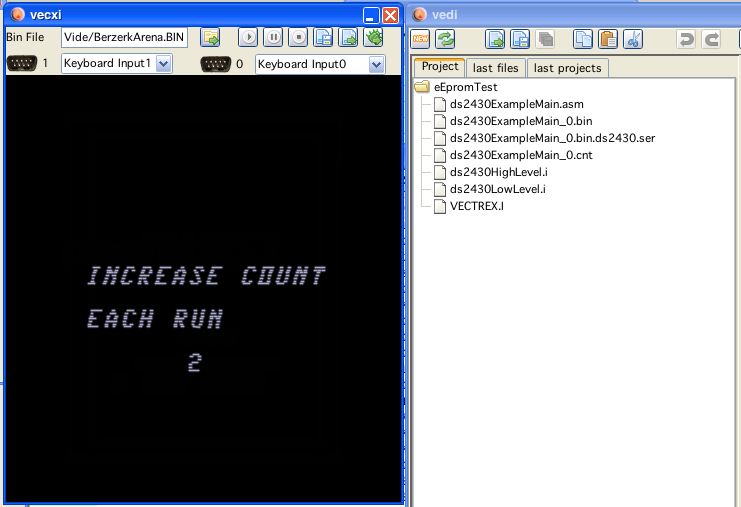

new project window
When creating a new project one can also create projects that support eEprom reading and writing.
For this example disable the "create standard game loop" creation (otherwise you get two main files, and the default won't be the eEprom example file).
Chose the settings like: (and press "create")
new project window
In order for the example to be runable select the created file: "ds2430ExampleMain.asm", right click to show the popup-Menu and select "set as Main".
With this you tell the current project that the selected file should be treated as the main file, meaning - this file must be assembled.

changing main file
As you see a couple of files (include files for low level access) are created along with the main file.

file structure
There only two methods and one variable worth mentioning of the included files:
you must declare a RAM space of 32 consecutive bytes, in the example the name for that space is "eeprom_buffer" (that buffer should beforehand be filled with a "standard" setting, in case the eEprom is first used and thus empty)
upon starting the cartridge, you read the eEprom "JSR eeprom_load" (transfer 32 bytes to the above mentioned buffer - or upon first access reset the eEprom with the default values)
upon changing data in the buffer, that you wish to persist call "JSR eeprom_save".
That is all.
The example program just increases a counter each time it is started.
(technically in vide the savestate is saved in a file with the name of the "bin" concatinated with "ds2430.ser" - java serialization)

running